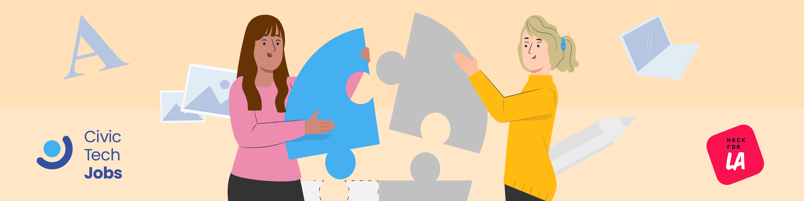

Civic Tech Jobs
A responsive website that makes it easy to find local volunteer opportunities in a variety of industries.
Team: Jen Chung (Lead), Grace Lin, Janzen Molina
Banner
When initially starting my work in Figma, I tested my understanding of the program's core functionalities by creating a 2D banner. I had initially begun work on the banner in Illustrator, but in order to maintain consistency in the overall workflow, I began to use the same tools as the other designers.
2D banner I created that pleased a difficult stakeholder
Wireframes
How to Join page wireframe that I created, prioritizing icon view
Design System
Sticky bar component card that I created